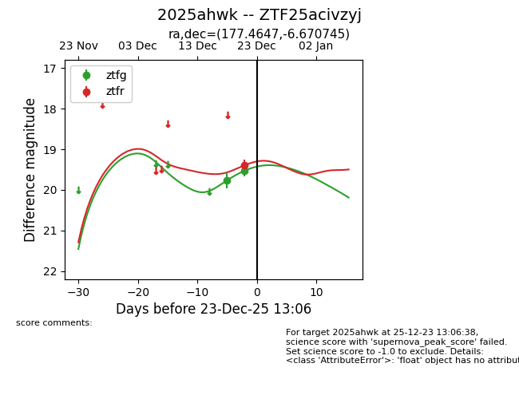
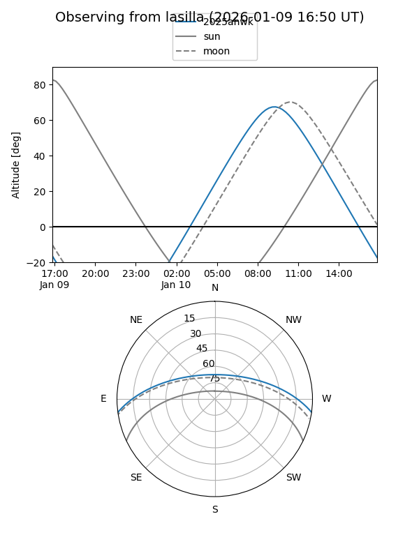
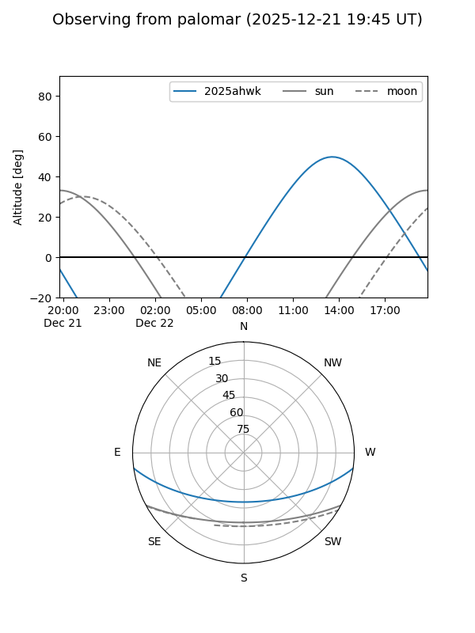
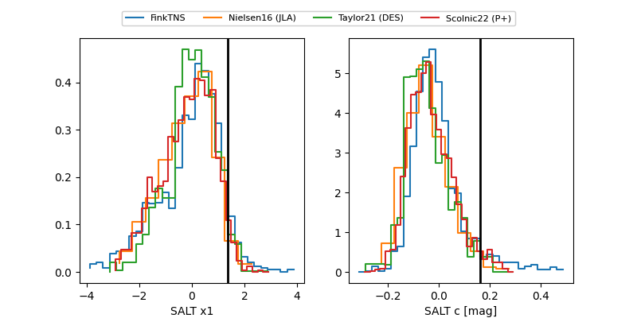

2025ahwk
Target 2025ahwk at 2025-12-31 16:19
Aliases and brokers:
FINK:
Lasair:
ALeRCE:
TNS:
YSE:
alt names
ZTF25acivzyj (ztf,fink_ztf)
2025ahwk (tns,yse)
Coordinates:
equatorial (ra, dec) = 177.4647,-6.67075
equatorial (HMS+DMS) = 11:49:51.53,-06:40:14.68
galactic (l, b) = (276.9079,+53.06114)
Flags:
Photometry:
last ztfg=19.53, ztfr=19.25
2 ztfg, 2 ztfr detections
Lightcurve

Visibility


Additional plots
